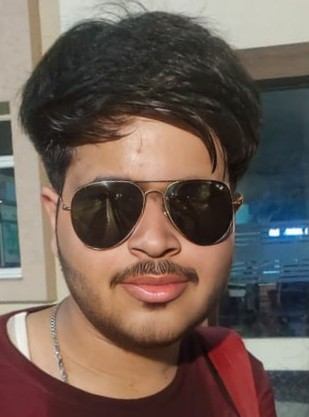

|  | I am Aditya Rastogi |
|---|---|
Currently pursuing B.Tech in CSIT |
|
And a student at KIET, Ghaziabad |
I’m an 18-year-old undergraduate student from Meerut, currently pursuing my B.Tech in Computer Science and Information Technology (CSIT) at K.I.E.T, Ghaziabad. Technology has always fascinated me — not just as a career choice but as something that constantly shapes the way we live. Right now, I’m in my first year, exploring different areas of computer science, from programming fundamentals to understanding how software and systems come together. I like keeping a balance between academics and personal growth. Outside of classes, I enjoy exploring new tech trends, learning by building small projects, and connecting with people who share the same passion for innovation. Being from Meerut, I carry with me a strong sense of community and curiosity. Moving to Ghaziabad for my studies has been a new chapter, one where I’m growing, experimenting, and shaping my journey step by step. This portfolio isn’t just about my technical side — it’s also a space where I share who I am, where I come from, and the path I’m carving for myself in the world of technology.
| Exploring Technology | ⭐⭐⭐⭐⭐ |
|---|---|
| Listening Songs | ⭐⭐⭐⭐ |
| Hustling | ⭐⭐⭐⭐ |
| Gymming | ⭐⭐⭐⭐ |
| Cooking | ⭐⭐⭐ |
| Watching Movies, Series, & Anime | ⭐⭐⭐ |
☎️ : +91 707 898 1506
üìß : rastogi.aditya.official@gmail.com
Instagram : @aditya._.rastogi
LinkedIn : @rastogi-aditya